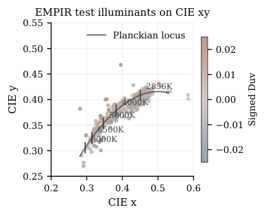
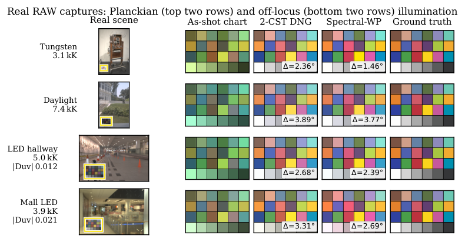

超越 CCT：面向逐次拍摄相机颜色校正的多通道 SPD 恢复
摘要
现代相机通过由相关色温（CCT）插值的两个或三个预校准 矩阵来校正颜色。这将光源光谱功率分布（SPD）压缩为一个标量。LED、荧光灯和混合光源位于普朗克轨迹之外，且具有相同色度的同色异谱光源需要不同的最优颜色校正矩阵（CCM），而 CCT 流程无法区分它们。我们转而恢复光源 SPD——基于基字典进行非负最小二乘，并以相机白点和多通道环境光传感器（ALS）为条件。随后针对每次拍摄拟合一个闭式 CCM。在包含 300 个光源和 个反射率的合成基准（测试集）上，平均角度误差从 降至 ，并取得 的尾部降低，且这一降低出现在类 LED 的偏离普朗克轨迹组（）上；该组中同色异谱歧义明显。在真实的 ALS 不理想因素与观测噪声下，该增益仍然成立，并且相同的偏离普朗克轨迹优势也延续到 个实测 SPD。
引言
颜色校正矩阵（CCM）是从白平衡后的相机 RGB 到色度标准（CIE XYZ 或 sRGB）的 线性映射。最优 CCM 取决于场景光源。标准 Adobe DNG 流程 [1] 存储两个参考 CCM，一个位于 K，另一个位于 K。运行时，它根据估计的相关色温（CCT）对二者进行插值。光源 SPD ——一个随波长变化的函数——被压缩为单个标量。
这对普朗克光源有效。黑体辐射体可由温度完全描述，因此 CCT 与 SPD 等价。现代室内与建筑照明常常位于该轨迹之外。LED、荧光灯和混合光源不遵循黑体曲线。两个光源在 色度上相差不超过 ，但归一化 SPD 形状差异超过 。二者产生相同的白点读数和相同的 CCT 估计。它们仍需要不同的最优 CCM。基于 CCT 的插值无法区分它们。
我们提出一种光谱感知的逐次拍摄 CCM，它用恢复的 SPD 替代 CCT 标量。我们从两个低成本观测中恢复 SPD：相机自身的白点响应，以及多通道环境光传感器（ALS）。ALS 是一种小型商用芯片，带有 8 至 14 个窄带光电二极管，已用于手机环境光感测。基于 个观测并对照小型 SPD 基，恢复问题是一个非负最小二乘问题。随后，恢复的 SPD 合成虚拟色卡，我们以闭式形式将场景特定 CCM 拟合到该色卡。
图 1 预览了该论证：左侧为真实同色异谱对，右侧为最坏情况误差降低。完整方法比较与消融见第 4 节；仅 WP 回退方案（不含 ALS 硬件）的真实数据合理性检查见第 4.5 节。
相关工作
有三条工作路线与光谱感知 CCM 相关。经典颜色恒常性估计光源色度，但止步于 CCM 阶段之前。CCT 与 条件化的 CCM 流水线将光源标量化为一个或两个数，而同色异谱对在构造上即可使其失效。光谱恢复工作处理的是反射率，而非光源或 CCM。我们依次将我们的方法与上述每条路线进行对照。
基于 CCT 的 CCM DNG 双 CCT 流水线 [1] 与 Karaimer 和 Brown 的三 CCT 扩展 [7] 均在 CCM 阶段将光源参数化为一维。我们将上游 AWB 视为与本文所处理的 CCM 阶段光谱条件化正交。
方法
我们将逐次拍摄的色彩校正矩阵（CCM）设计视为一个光谱恢复问题。每次拍摄遵循三个阶段。首先，我们通过针对固定光谱功率分布（SPD）基的小规模非负最小二乘，从相机白点和多通道ALS读数中恢复光源SPD 。其次，我们将代入成像方程，以合成相机原始RGB与参考CIE XYZ下的虚拟24色块图表。第三，我们对该图表拟合一个 CCM，采用闭式最小二乘，将其应用于采集像素，并进行色适应到D65参考帧。本节其余部分形式化每个阶段以及ALS滤光片组。
前向模型 我们将波长在 nm上按 nm为间隔离散化（）。令为未知SPD；令为相机光谱灵敏度函数（SSF），为CIE 1931颜色匹配函数（CMFs），为ALS滤光片组，为固定的24色块ColorChecker风格反射率集合。相机白点与ALS观测值分别是与SSF和ALS滤光片的波长积分。每个色块的相机RGB与CIE XYZ是同样的积分再乘以该色块反射率。
基于SPD基的非负最小二乘（NNLS）恢复 我们将约束在基的非负张成空间内。为构建，我们对每个EMPIR PhotoLED SPD [11]做最大值归一化，使基原子描述形状而非幅度；绝对尺度被吸收到恢复系数中，并且我们在测试光源集上观察到条件数。对于主要实验，我们选取个代表性原子，方法是在一个留出的包含200个光源的池上做均值聚类；表2(a)表明结果对不敏感。我们将相机白点与ALS读数堆叠成，并构造相应的前向算子，然后求解
| (1) |
我们在scipy.optimize.nnls中使用活动集NNLS。仅非负性本身即可对反演进行正则化；我们不添加Tikhonov项。训练与测试光源集互不相交，并按分组（第4.1节）。
逐次拍摄的虚拟校准 在获得后，我们通过将代入前向模型来合成虚拟24色块图表。对每个色块，我们得到合成相机RGB 与CIE XYZ ，二者分别是与和的波长积分。我们通过闭式最小二乘将拟合为XYZRGB CCM。该方向与DNG ColorMatrix约定一致。相机RGB与XYZ在相差一个自由曝光/归一化尺度的意义下定义，该尺度会传播到中；我们固定绿色行中间元素以进行规范固定，这是若干可允许归一化之一：
| (2) |
推理时，我们将采集到的RGB 通过映射到场景坐标系XYZ。我们恢复的矩阵条件数位于–范围内，因此反演在数值上稳定。然后，我们应用Bradford色适应[12]，从的白点到D65，以进行评估。
ALS滤光片组 我们的主要实验使用个理想化高斯滤光片，半高全宽（FWHM）为25 nm，峰值在400–700 nm范围内均匀间隔（图2）；这为通道数消融提供了一个干净的对照。第4.3节报告了一种类AS7341响应，其在AS7341通道中心处具有非对称峰、相邻通道串扰和直流偏置。
实验
我们在由 300 个光源 3,100 个反射率组成的合成基准（测试集）上，将所提流程与六种基线（CCT 驱动、 条件、光谱）进行比较，然后检验鲁棒性、OOD 泛化、同色异谱对压力测试，最后进行实测 SPD 评估以及真实 RAW 合理性检查。
Nikon D40 的光谱灵敏度来自 [13]。测试光源为 300 个与基光源池不相交的 EMPIR 光源（随机种子 ），按带符号 Duv 分为普朗克型（，）、温和型（，）、类 LED（，）和极端型（，；见图 3）。测试反射率为 31 个 CAVE 场景 [15] 中每个场景的 100 个随机像素，共 个向量。校准目标为 24 色块 ColorChecker 风格反射率集，与 CAVE 测试反射率不同，因此评估是跨分布测试。我们在 D65 XYZ 上报告每对的角度误差，包括平均值和最差 25% 平均值（上四分位数的平均，可暴露同色异谱尾部）；CIE [16] 遵循相同排序，并在文中报告。
基线 Oracle：已知真实 SPD 的逐光源最小二乘 CCM；一个非因果上界。2-CST DNG [1]：使用 Adobe ColorMatrix1/2，并依据 McCamy CCT 进行 插值 [17]。2-CST SELF：使用自校准矩阵进行相同插值（D40 SSF 普朗克型 ColorChecker 反射率）。2D-NN：在 上对基光源 CCM 进行最近邻查找。CST-MLP [2]：对 Tedla et al. 的两个头进行复现：一个 2 层 32 单元 MLP，从 映射到 (i) 一个 CCM 的 8 个自由项（“CST-MLP3×3”），或 (ii) 一个 元素 矩阵，该矩阵将 Finlayson 根多项式特征 [8] 映射到 XYZ（“CST-MLP3×6”）。两个头均在 200 个基光源上训练 个 Adam 步，参数为 ，并采用逐色块余弦损失。Spectral WP-only：我们的框架取 。Spectral WPALS：完整方法取 。

主要结果：按 Duv 分组的合成基准（见表 1）报告每个 Duv 组的平均角度误差与最差25%角度误差。WPALS 在每个组中都是最佳的非 Oracle 方法。相对于最强的非光谱基线（CST-MLP3×6，总体 ），WPALS 将平均误差降低 （）。主要增益在类 LED 组（）上具有统计依据，该组中同色异谱问题确实存在：最差25%从 降至 ，降低了 。Extreme 组的尾部更大，但仅基于 个光源，且仅作方向性报告。以 为条件的基线（2D-NN、CST-MLP）在低 Duv 下优于由 CCT 驱动的基线，这证实了 Tedla 等 的诊断。它们在轨迹外失效，此时 WPALS 具有 个条件维度而不是 个。Tedla 的 36 根多项式扩展缩小了差距但未消除差距（总体 1.89∘ 对 1.20∘，类 LED 上 2.27∘ 对 1.31∘）。在 Planckian 上，ALS 仅比 WP-only 增加 ——为正但很小。
| CCT-driven | -conditioned | Spectral (ours) | ||||||
| group | Oracle | DNG [1] | SELF | 2D-NN | [2] | WP-only | WPALS | |
| Mean angular error | ||||||||
| Planckian () | 0.95 | 2.45 | 3.18 | 1.75 | 1.79 | 1.33 | 1.55 | 1.05 |
| Mild () | 0.87 | 2.73 | 3.44 | 2.01 | 1.99 | 2.21 | 1.82 | 1.21 |
| LED-like () | 0.81 | 3.09 | 4.26 | 2.78 | 2.41 | 2.27 | 2.18 | 1.31 |
| Extreme () | 2.36 | 11.08 | 26.75 | 6.60 | 14.31 | 10.11 | 9.23 | 4.49 |
| Overall () | 0.93 | 2.77 | 3.81 | 2.07 | 2.15 | 1.89 | 1.86 | 1.20 |
| 最差25%角度误差（上四分位数的均值） | ||||||||
| Planckian | 2.02 | 4.29 | 5.33 | 3.74 | 3.61 | 2.77 | 3.21 | 2.27 |
| Mild | 1.92 | 5.05 | 6.47 | 4.57 | 4.15 | 5.97 | 3.92 | 2.83 |
| LED-like | 1.88 | 5.32 | 8.50 | 6.37 | 4.67 | 4.79 | 4.08 | 2.80 |
| Extreme | 7.10 | 35.88 | 88.34 | 18.86 | 45.66 | 33.39 | 30.97 | 12.63 |
| Overall | 2.06 | 5.29 | 7.73 | 4.71 | 4.74 | 4.68 | 4.08 | 2.74 |
视觉差距在饱和色卡色块上尤为明显：同色异谱歧义最直接地转化为色相和饱和度误差，在这些误差上 WPALS 接近 Oracle 下限，而 WP-only 与 CCT 基线在红、橙、蓝原色上仍保留较大的逐色块残差（可见于表 1 的最差25%列，主要由这些色块主导）。
感知色差 均值 [16]（DNG / CST-MLP3×3 / WP-only / WPALS）：总体 ；类 LED（）；Extreme（，方向性）。与角度误差排序相同。
鲁棒性与基代表性 我们沿四个轴测试所提出的流程（表 2）。(a) 通道数 基大小：在非普朗克子集上扫描 相对于 ， 拐点在 范围内稳健（处于该行最小值的 以内，且在 的每个取值处），这与自然光源 SPD 的经典 5–8 维秩一致。(b) 现实 ALS 滤光片形状：类似 AS7341 的响应——在 AS7341 通道中心处非对称峰、 串扰、 直流偏置；一种保守的非理想化，而非厂商实测曲线——在 处将平均误差从 提高到 （）。(c) 观测噪声：在 处对 施加乘性高斯噪声，使 WPALS 平均误差从 退化到 （在 处为 ）；WPALS–DNG 交叉将需要 。(d) 跨数据库（分布外）：在从 EMPIR 留出的 个 CIE 参考光源（FL、HP、LED-B/V/RGB）上，仅用 EMPIR 的基不如 DNG（ 对 ）：该基无法表示荧光 Hg 谱线。用 个 CIE 参考（每个主要类别一个）扩充池并重新运行 -means 后，在这一受控测试中恢复了光谱领先（在其余 个留出样本上为 对 DNG ）。少量类别代表性扩充可显著改善 OOD 行为；计数与选择策略是针对该基准调优的。
| Axis / condition | mean / worst-25 (∘) |
|---|---|
| 基线（理想 ，无噪声） | |
| AS7341-like filters () | |
| observation noise | |
| OOD, EMPIR-only basis | |
| OOD, basis CIE refs |
同色异谱对压力测试 我们选取 50 个 EMPIR 对 ：具有 ，但 SPD 形状角大于 （其中 SPD 形状角是在单位归一化 SPD 上以度表示的 ）。两侧均从基中留出。WP-only NNLS 坍缩 该对（恢复的对角为 ，真实为 ）；WPALS 恢复为 ，每侧 SPD 误差为 对 ——提升 。图 1(a) 展示了一个可比对。在这些精选对上，WPALS 的每片 CCM 误差（）略高于 WP-only（）：WP-only 收敛到一个单一的“折中” SPD，对两侧都较为宽容地拟合，而 WPALS 则暴露了基离散化误差。更好的 SPD 恢复并不会线性转化为更低的 CCM 误差；基与 CCM 目标并不完全一致。WPALS 独特提供的是识别同色异谱正确一侧的能力；在上文更广泛的基准中，反射率可自由变化，这会转化为可测量的 CCM 误差增益。

实测 SPD 评估与真实 RAW 合理性检查 我们将 EMPIR 测试光源替换为 光谱辐射计实测的 SPD，其来自 Beyond RGB [18]（1,209 个实验室 + 475 个户外）；其余协议（Nikon D40 SSF、CAVE 反射率、由实测 SPD 合成的类 AS7341 ALS）不变。这验证了流程中的光源一侧，而非完整的 RGBALS 采集环路。同一按 Duv 的模式在切换至实测 SPD 后于均值和最差 25% 两项上均保留（表 3）：WPALS 在类 LED 组和极端组的两项指标上均领先，而 CST-MLP3×6 在普朗克组和轻度组上胜出。Beyond RGB 上的类 LED 优势小于合成基准（此处 均值 / 最差 25%，对比 / ，见表 1）；我们将此归因于更宽的测试光源分布，以及 LED 偏置的 EMPIR 基在日光主导的户外场景中的次优性。光谱条件化在色度模糊处带来收益，但收益大小取决于测试集偏离轨迹的程度。
| Method | Plk | Mild | LED | Ext |
|---|---|---|---|---|
| Mean angular error | ||||
| DNG | 2.12 | 1.91 | 2.51 | 6.97 |
| CST-MLP3×6 | 1.72 | 1.67 | 2.13 | 9.50 |
| WP-only | 2.67 | 2.31 | 3.16 | 5.76 |
| WPALS | 2.17 | 1.83 | 1.89 | 5.14 |
| Worst-25% angular error | ||||
| DNG | 4.40 | 3.71 | 5.40 | 21.61 |
| CST-MLP3×6 | 3.66 | 3.67 | 4.50 | 31.64 |
| WP-only | 4.84 | 4.69 | 6.26 | 15.70 |
| WPALS | 4.56 | 4.01 | 4.33 | 15.50 |
我们在 117 张真实 Nikon D40 拍摄图像上进行合理性检查，这些图像有逐图像白点测量，但没有 ALS 硬件（图 4 展示了其中四张）。该数据集是 近普朗克；三种仅 WP 方法在平均角度误差上均落在 以内（2-CST SELF 、Spectral WP-only 、2-CST DNG ）。这是近普朗克分布下的预期行为：仅 WP 的回退方案恢复 SPD 在轨迹上的一维位置，而 ALS 在此处无法提供任何可分辨的增量。WPALS 在同步 RGBALS 采集上的端到端验证仍是未来工作。
讨论
我们以通道数消融得到的一个启示作结，然后讨论局限性。
含义：8 个通道从何而来 WPALS 误差曲线的拐点位于 ，在基底规模 范围内保持稳健（第 4.3 节）。这与自然光源 SPD 经典的 5–8 维秩以及商用多光谱 ALS 芯片的通道数相符 [3]：超过 8 个窄波段后，光谱信息对 CCM 终点的回报递减。一个实用解读是：8 通道商用 ALS 为离普朗克轨迹波段提供了足够的光谱条件化，而 条件化的基线在该波段失效。
更好的 SPD 恢复何时会带来更好的 CCM？ 同色异谱压力测试（第 4.5 节）显示出一个表面上的悖论：WPALS 比仅 WP 更准确地恢复同色异谱 SPD ，但在这些精挑细选的配对上，逐块 CCM 误差反而略差（ 对 ）。其机制在于，仅 WP 会收敛到一个单一的“折中”SPD，该 SPD 以宽容方式同时拟合同色异谱配对的两侧；WPALS 能分辨该配对，但随后会在单侧付出基底离散化误差。因此，SPD 恢复准确度对 CCM 准确度而言 并不充分。然而，在主基准上它是 必要 的；在主基准中反射率分布跨度很宽：在那里，识别正确同色异谱侧的能力直接转化为第 4.1 节报告的、在类 LED 光源上 最差 25% 的降低。压力测试是病理性边界；主基准是部署代理。
局限性与未来工作 我们通过全程将预测头固定为非参数 NNLS 形式，来隔离光谱条件化的贡献。正交方向——在同一 维输入上训练参数化头（MLP、根多项式等）——是作为未来工作指出的学习型摊销扩展；CST-MLP 对照方法按其原始设计仅接收 色度 [2]。ALS 观测是仿真的；类 AS7341 与噪声分析覆盖了仿真到现实差距中可处理的部分，但校准漂移与 ALS–RGB 空间失配尚未解决。117 幅 D40 RAW 采集图像（第 4.6 节，图 4）仅对仅 WP 回退方案做合理性检查，且该数据集 近普朗克轨迹，其中 ALS 并未提供白点尚未给出的信息；在离普朗克轨迹光源上进行端到端同步 RGBALS 验证，是硬件侧最清晰的下一步。单一光源 SPD 假设在室内混合照明下也会失效（例如，窗外日光加 LED 筒灯）。我们只测试了一台相机（Nikon D40）；跨传感器泛化尚未验证，尽管有原则的双映射方案 [14] 提示了一条可处理的扩展路径。本文未测量逐次拍摄 NNLSLSQ 流水线上的嵌入式 ISP 延迟。
结论
按相关色温（CCT）的双颜色校正矩阵（CCM）插值是一种针对更高维量的 1D 模型。少量额外光谱观测即可恢复光谱功率分布（SPD）形状，并拟合场景特定的 CCM；在 Planckian、mild 和 LED-like 组上，该 CCM 逼近逐光源 Oracle 至 以内。八个 ALS 通道即可满足（一个 拐点，在基大小 上均稳健）。在 LED-like 组（）中，同色异谱问题较为明显，WPALS 的最差 25% 比最强非光谱基线（CST-MLP3×6）低；该优势对类 AS7341 滤光片形状和 观测噪声均稳健。跨数据库泛化需要用类别代表性参考 SPD 扩充基；在 Beyond RGB 实测光源上，光谱优势在偏离普朗克轨迹时最大，正如同色异谱问题框架所预测。
References
- [1] Adobe Systems, Digital Negative (DNG) Specification, version 1.6.0.0, https://helpx.adobe.com/camera-raw/digital-negative.html, 2021.
- [2] S. Tedla, J. E. Little, H. C. Karaimer, and M. S. Brown, Off the Planckian locus: Using 2D chromaticity to improve in-camera color, arXiv preprint arXiv:2511.17133 (2025).
- [3] ams Osram, AS7341 11-Channel Multi-Spectral Digital Sensor, Datasheet, https://ams-osram.com/products/sensors/spectral-sensors/ams-as7341, 2023.
- [4] G. Buchsbaum, A spatial processor model for object colour perception, J. Franklin Inst., 310, 1 (1980).
- [5] J. van de Weijer, T. Gevers, and A. Gijsenij, Edge-based color constancy, IEEE Trans. Image Process., 16, pg. 2207 (2007).
- [6] S. Yue and M. Wei, Color constancy from a pure color view, J. Opt. Soc. Am. A., 40, pg. 602 (2023).
- [7] H. C. Karaimer and M. S. Brown, Improving color reproduction accuracy on cameras, In Proc. CVPR (2018).
- [8] G. D. Finlayson, M. Mackiewicz, and A. Hurlbert, Color correction using root-polynomial regression, IEEE Trans. Image Process., 24, pg. 1460 (2015).
- [9] B. Arad and O. Ben-Shahar, Sparse recovery of hyperspectral signal from natural RGB images, In Proc. ECCV (2016).
- [10] Y. Li, Q. Fu, and W. Heidrich, Multispectral illumination estimation using deep unrolling network, In Proc. ICCV (2021).
- [11] EMPIR PhotoLED, EMPIR PhotoLED Spectral Database, version 2, European Metrology Programme for Innovation and Research, 2018.
- [12] K. M. Lam, Metamerism and Colour Constancy, Ph.D. thesis, University of Bradford, 1985.
- [13] J. Jiang, D. Liu, J. Gu, and S. Süsstrunk, What is the space of spectral sensitivity functions for digital color cameras?, In Proc. WACV (2013).
- [14] S. Yue and M. Wei, Effective cross-sensor color constancy using a dual-mapping strategy, J. Opt. Soc. Am. A., 41, pg. 329 (2024).
- [15] F. Yasuma, T. Mitsunaga, D. Iso, and S. K. Nayar, Generalized assorted pixel camera: Post-capture control of resolution, dynamic range and spectrum, Technical Report CUCS-061-08, Department of Computer Science, Columbia University, 2008.
- [16] G. Sharma, W. Wu, and E. N. Dalal, The CIEDE2000 color-difference formula: Implementation notes, supplementary test data, and mathematical observations, Color Res. Appl., 30, pg. 21 (2005).
- [17] C. S. McCamy, Correlated color temperature as an explicit function of chromaticity coordinates, Color Res. Appl., 17, pg. 142 (1992).
- [18] O. Glatt, Y. Ater, W.-S. Kim, S. Werman, O. Berby, Y. Zini, S. Zelinger, S. Lee, H. Choi, and E. Soloveichik, Beyond RGB: A real world dataset for multispectral imaging in mobile devices, In Proc. WACV, pp. 4344–4354 (2024).